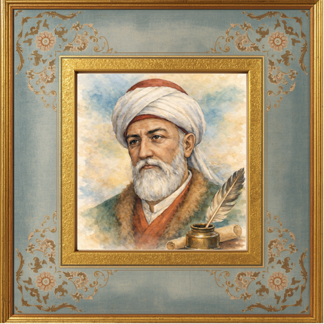

Ehl-i Kalem / Klasik Türk Edebiyatı
"Işk imiş her ne var âlemde..."
Fuzûlî (1483 – 1556), asıl adıyla Mehmed bin Süleyman, Klasik Türk edebiyatının (Divan edebiyatı) ve Azeri Türkçesinin en büyük şairlerinden biridir. Bağdat yakınlarında (Kerbela veya Hille) doğmuş ve ömrünü bu topraklarda geçirmiştir.
Edebi gücünü samimiyet, derin bir tasavvufi duyarlılık ve kusursuz aruz tekniğiyle birleştiren Fuzûlî, şiirlerinde aşkı, acıyı ve sevgiliye duyulan özlemi beşeri sınırların ötesine taşıyarak ilahi bir boyuta ulaştırmıştır. Onun için acı ve ıstırap, ruhu olgunlaştıran ve sevgiliye (Yaradan'a) yaklaştıran yüce bir duygudur.
Hem Türkçe, hem Farsça hem de Arapça divan kaleme alabilecek derecede derin bir kültüre ve dil hâkimiyetine sahip olan şair, döneminin tüm bilimlerine ve felsefi akımlarına vakıf olduğunu şiirlerinde ustalıkla sergilemiştir.

Edebi Miras
Türk edebiyatının en lirik ve derin mesnevisidir. Beşeri aşkın ilahi aşka (fenafillaha) dönüşmesini olağanüstü bir duyarlılıkla anlatır.
Edebiyatımızın ilk ve en önemli hiciv/edebi mektup örneklerindendir. Dönemin bürokrasisini ve adaletsizliğini güçlü bir dille eleştirir.
Peygamber Efendimiz (s.a.v.) için yazılmış ünlü bir naattır. Suyun arındırıcılığı ve Hz. Muhammed'e duyulan özlem ahenkle işlenir.
Şairin lirik gazellerini, kasidelerini ve edebi dehasını yansıtan şiirlerini topladığı, dil ve üslup şaheseri olan ana eseridir.
Unutulmaz Sözler